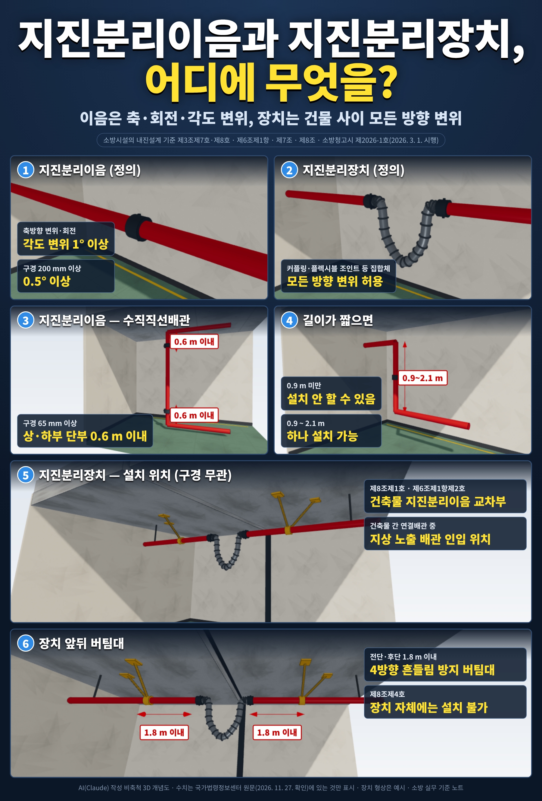
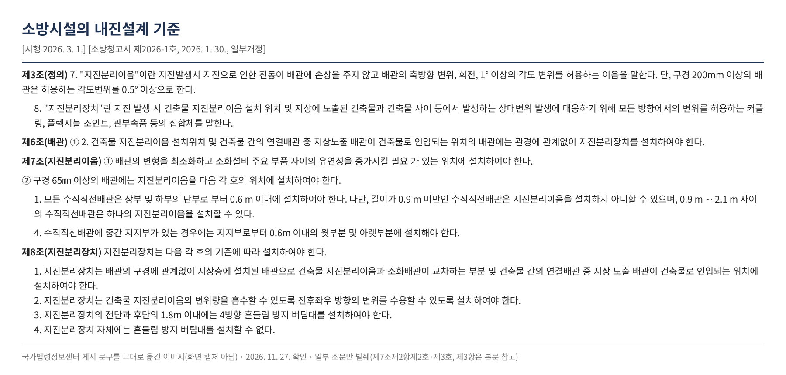
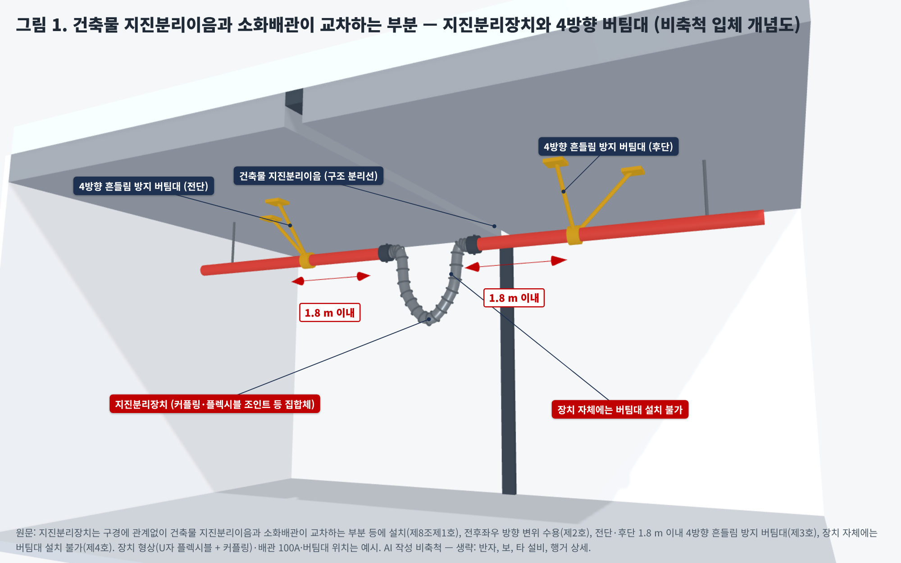
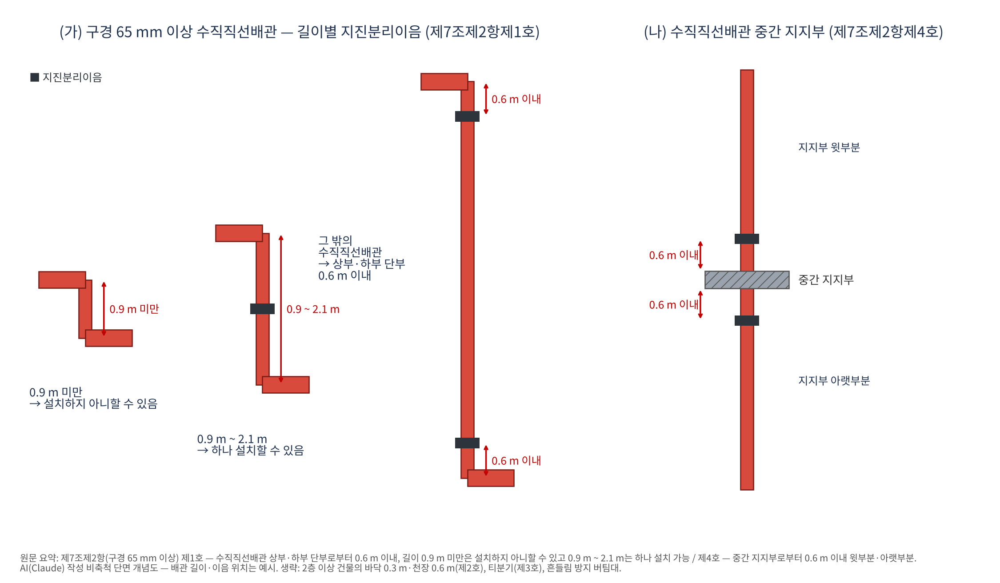

지진분리이음과 지진분리장치, 어디에 무엇을 달아야 할까요? — 0.6 m·1.8 m 기준 정리
왜? 지진 때 건물 구조부재끼리, 또는 건물과 건물이 서로 다르게 움직이면 그 사이를 지나는 배관에 응력이 몰리므로, 이음이나 장치로 그 상대변위를 받아 주라는 것입니다(제6조제1항제1호).

1. 공식 기준 원문 (소방시설의 내진설계 기준, 현행)
제3조(정의) 7. "지진분리이음"이란 지진발생시 지진으로 인한 진동이 배관에 손상을 주지 않고 배관의 축방향 변위, 회전, 1° 이상의 각도 변위를 허용하는 이음을 말한다. 단, 구경 200mm 이상의 배관은 허용하는 각도변위를 0.5° 이상으로 한다.
8. "지진분리장치"란 지진 발생 시 건축물 지진분리이음 설치 위치 및 지상에 노출된 건축물과 건축물 사이 등에서 발생하는 상대변위 발생에 대응하기 위해 모든 방향에서의 변위를 허용하는 커플링, 플렉시블 조인트, 관부속품 등의 집합체를 말한다.
제7조(지진분리이음) ① 배관의 변형을 최소화하고 소화설비 주요 부품 사이의 유연성을 증가시킬 필요 가 있는 위치에 설치하여야 한다.
② 구경 65㎜ 이상의 배관에는 지진분리이음을 다음 각 호의 위치에 설치하여야 한다.
1. 모든 수직직선배관은 상부 및 하부의 단부로 부터 0.6 m 이내에 설치하여야 한다. 다만, 길이가 0.9 m 미만인 수직직선배관은 지진분리이음을 설치하지 아니할 수 있으며, 0.9 m ∼ 2.1 m 사이의 수직직선배관은 하나의 지진분리이음을 설치할 수 있다.
2. 제6조제3항 본문의 단서에도 불구하고 2층 이상의 건물인 경우 각 층의 바닥으로부터 0.3m, 천장으로부터 0.6m 이내에 설치하여야 한다.
3. 수직직선배관에서 티분기된 수평배관 분기지점이 천장 아래 설치된 지진분리이음보다 아래에 위치한 경우 분기된 수평배관에 지진분리이음을 다음 각 목의 기준에 적합하게 설치하여야 한다.
가. 티분기 수평직선배관으로부터 0.6m 이내에 지진분리이음을 설치한다.
나. 티분기 수평직선배관 이후 2차측에 수직직선배관이 설치된 경우 1차측 수직직선배관의 지진분리이음 위치와 동일선상에 지진분리이음을 설치하고, 티분기 수평직선배관의 길이가 0.6m 이하인 경우에는 그 티분기된 수평직선배관에 가목에 따른 지진분리이음을 설치하지 아니한다.
4. 수직직선배관에 중간 지지부가 있는 경우에는 지지부로부터 0.6m 이내의 윗부분 및 아랫부분에 설치해야 한다.
③ 제6조제3항제1호에 따른 이격거리 규정을 만족하는 경우에는 지진분리이음을 설치하지 아니할 수 있다.
제8조(지진분리장치) 지진분리장치는 다음 각 호의 기준에 따라 설치하여야 한다.
1. 지진분리장치는 배관의 구경에 관계없이 지상층에 설치된 배관으로 건축물 지진분리이음과 소화배관이 교차하는 부분 및 건축물 간의 연결배관 중 지상 노출 배관이 건축물로 인입되는 위치에 설치하여야 한다.
2. 지진분리장치는 건축물 지진분리이음의 변위량을 흡수할 수 있도록 전후좌우 방향의 변위를 수용할 수 있도록 설치하여야 한다.
3. 지진분리장치의 전단과 후단의 1.8m 이내에는 4방향 흔들림 방지 버팀대를 설치하여야 한다.
4. 지진분리장치 자체에는 흔들림 방지 버팀대를 설치할 수 없다.
제6조(배관) ① 1. 건물 구조부재간의 상대변위에 의한 배관의 응력을 최소화하기 위하여 지진분리이음 또는 지진분리장치를 사용하거나 이격거리를 유지하여야 한다. / 2. 건축물 지진분리이음 설치위치 및 건축물 간의 연결배관 중 지상노출 배관이 건축물로 인입되는 위치의 배관에는 관경에 관계없이 지진분리장치를 설치하여야 한다.
원문 화면

2. 적용 조건 — 둘은 무엇이 다른가
| 구분 | 지진분리이음 (제3조제7호·제7조) | 지진분리장치 (제3조제8호·제8조) |
|---|---|---|
| 받아 주는 변위 | 배관의 축방향 변위, 회전, 1° 이상 각도 변위(구경 200 mm 이상은 0.5° 이상) | 모든 방향 변위(설치 기준은 “전후좌우 방향의 변위를 수용”) |
| 형태 | “이음” | 커플링, 플렉시블 조인트, 관부속품 등의 집합체 |
| 대상 구경 | 제7조제2항: 구경 65 mm 이상 배관 | 구경에 관계없이(제8조제1호, 제6조제1항제2호 “관경에 관계없이”) |
| 설치 위치 | 수직직선배관 상·하부 단부 0.6 m 이내 등(아래 ①~④) | 지상층 배관 중 ① 건축물 지진분리이음과 소화배관이 교차하는 부분 ② 건축물 간 연결배관 중 지상 노출 배관이 건축물로 인입되는 위치 |
| 버팀대 | (제7조에는 별도 규정 없음) | 전단·후단 1.8 m 이내 4방향 흔들림 방지 버팀대, 장치 자체에는 설치 불가 |
지진분리이음 위치(제7조제2항, 구경 65 mm 이상).
① 수직직선배관 상부·하부 단부에서 0.6 m 이내. 길이 0.9 m 미만이면 설치하지 않을 수 있고, 0.9 m ~ 2.1 m이면 하나만 설치할 수 있습니다(제1호). “단부”는 직선배관에서 방향 전환하는 지점과 배관이 끝나는 지점이고(제3조제17호), 방향전환부분이 상쇄배관(offset) 길이 이하이면 하나의 수직직선배관으로 봅니다(제3조제22호, 상쇄배관 합산길이 3.7 m 이하 — 제3조제21호).
② 2층 이상 건물은 각 층 바닥에서 0.3 m, 천장에서 0.6 m 이내(제2호) — 관통부와 함께 벽 관통 배관 글에서 다뤘습니다.
③ 티분기: 수직직선배관에서 티분기된 수평배관의 분기지점이 천장 아래 지진분리이음보다 아래에 있으면, 분기된 수평배관에도 지진분리이음을 둡니다(제3호). 티분기 수평직선배관 길이가 0.6 m 이하이면 가목의 이음은 두지 않습니다(나목).
④ 중간 지지부가 있으면 지지부에서 0.6 m 이내 윗부분과 아랫부분(제4호).
지진분리이음 생략(제7조제3항). 관통부 이격거리(제6조제3항제1호)를 만족하면 지진분리이음을 설치하지 않을 수 있습니다. 제7조제2항제2호(2층 이상)와 함께 걸리는 현장의 적용 순서는 원문만으로 해석이 갈릴 수 있으므로 관할 소방서에 먼저 확인하세요.
지진분리장치의 “지상층” 한정. 제8조제1호는 “지상층에 설치된 배관으로” 교차부·인입부에 설치하도록 적고 있습니다. 지하층 배관이 건축물 지진분리이음을 지나는 경우에 대한 별도 문구는 원문에서 찾지 못했습니다. 다만 제6조제1항제1호는 층 구분 없이 구조부재 간 상대변위에 대해 지진분리이음·지진분리장치·이격거리 중 하나로 대응하도록 정하므로, 지하층이라고 대응을 빼도 된다는 뜻으로 읽기는 어렵습니다(의견). 설계 단계에서 관할 소방서와 협의해 두는 것이 안전합니다.
3. 그림으로 보기


그림은 AI(Claude)로 그린 비축척 개념도입니다. 원문에 있는 조건(1°·0.5°, 0.6 m, 0.9 m, 2.1 m, 1.8 m, 구경 무관, 장치 자체 버팀대 불가)만 표시했고, 장치 형상(U자 플렉시블 + 커플링), 배관 100A, 버팀대 위치, 배관 길이는 예시입니다. 반자·보·행거 상세·티분기는 생략했습니다. 설치 적합 판정용 도면이 아닙니다.
측정 기준점 주의: 0.6 m는 원문상 수직직선배관 “상부 및 하부의 단부로부터”, 중간 지지부는 “지지부로부터” 재는 거리이고, 1.8 m는 지진분리장치의 “전단과 후단”으로부터의 거리입니다. 이음·장치·버팀대의 어느 점(중심, 끝단)까지 재는지는 원문에 없습니다. 장치가 여러 부품의 집합체이므로 집합체의 양 끝을 전단·후단으로 보는 것이 문언상 자연스럽습니다(의견).
4. 단계별 확인사항
| 단계 | 확인할 것 |
|---|---|
| 설계 | 건축 구조도에서 건축물 지진분리이음(Exp. J) 위치와 건축물 간 지상 노출 연결배관 인입부를 표시 → 그 위치를 지나는 소화배관마다 구경과 관계없이 지진분리장치 표기. 65 mm 이상 수직직선배관은 길이(0.9 m·2.1 m)별로 이음 개수·위치, 티분기·중간 지지부 위치 표기. 장치 앞뒤 1.8 m 이내 4방향 버팀대를 배치하고 그 위치의 구조부재 확인 |
| 시공 | 장치가 전후좌우 변위를 받을 수 있는 방향·여유로 설치됐는지, 장치 자체에 버팀대·행거 고정이 걸리지 않았는지, 앞뒤 1.8 m 이내 4방향 버팀대. 수직배관 이음은 단부·지지부에서 0.6 m 이내 |
| 감리 | 장치 제품의 허용 변위 방향(모든 방향 여부), 지진분리이음 각도 변위 성능(1°, 200 mm 이상 0.5°), 설치 위치 실측(0.6 m·1.8 m), 생략 근거(제7조제2항제1호 단서, 제7조제3항)의 기록 |
| 유지관리 | 다른 공종 배관·덕트·케이블트레이가 장치의 움직임을 막지 않는지, 보수 공사 때 장치·이음을 일반 이음으로 바꾸지 않았는지 |
5. 적용 시점과 경과조치
현행본: 소방청고시 제2026-1호(2026. 1. 30. 발령, 2026. 3. 1. 시행).
연혁 대조: 제3조제7호·제8호, 제6조제1항제1호·제2호, 제7조 전체, 제8조 전체 문구를 개정 전 판본(소방청고시 제2022-76호, 2022. 12. 1. 시행)과 국가법령정보센터에서 대조한 결과 같습니다.
경과조치(부칙 제2026-1호 제2조): 이 고시 시행 전에 건축허가 등의 신청 또는 신고를 하거나 소방시설공사의 착공신고를 한 특정소방대상물에 대해서는 종전의 기준에 따릅니다.
기존 건축물 특례(제19조): 기존건축물이 증축·개축·대수선되거나 용도변경되는 경우 내진설계 공사가 현저하게 곤란하다고 소방본부장 또는 소방서장이 인정하면, 기능·사용에 지장이 없는 범위에서 기준 일부를 적용하지 않을 수 있습니다.
확인하지 못한 것: 제2022-76호 이전 판본의 해당 조문 문구, 지진분리이음·지진분리장치 제품에 대한 별도 인증 기준 유무는 이번에 원문을 대조하지 않았습니다.
공식 원문 링크
· 소방시설의 내진설계 기준 현행(소방청고시 제2026-1호) — 본문·부칙·별표
· 개정 전 판본(소방청고시 제2022-76호, 2022. 12. 1. 시행)
· 같이 보기: 벽 관통 배관 이격거리 — 제6조제3항, 가지배관 고정장치 — 제13조, 가압송수장치 내진스토퍼·가요성이음장치 — 제5조